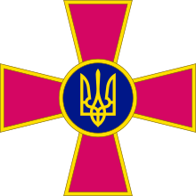

Главная
Помощь
Главная
Помощь
Если вам нужна помощь, или вы хотите отправить доказательства военных преступлений России нажмите на кнопки ниже
Сообщить о военных преступлениях россии
Сообщить о ПРЕСТУПЛЕНИЯХ ПРОТИВ НАСЕЛЕНИЯ
Сообщить о Передвижении войск россии
Сообщить о Передвижении войск россии
Все буде Україна!
Вірте в ЗСУ та перемогу!